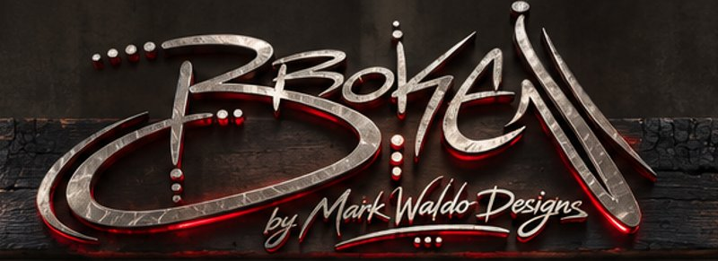

MEDIA
Loading player…
VIDEO PENDING
No source configured.
Neon glow is decorative (not beat-synced). True audio-reactive glow needs an MP4.
0:00
—:—
—

Loading player…
No source configured.
Neon glow is decorative (not beat-synced). True audio-reactive glow needs an MP4.